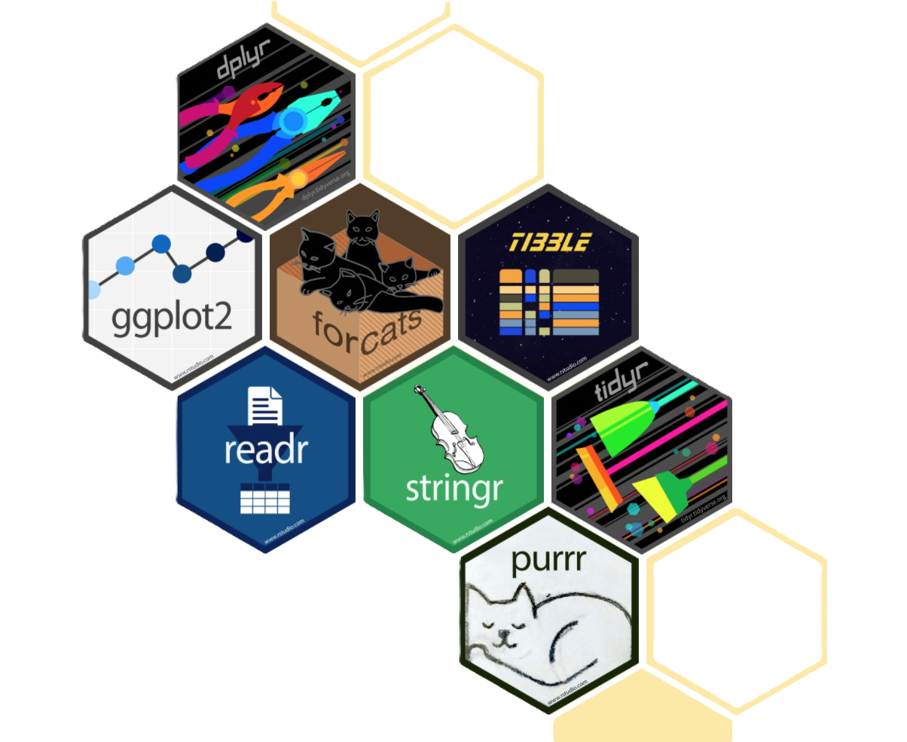

2 Manipulación de tablas: tidyverse
Tidyverse es una colección de paquetes de R diseñados para la ciencia de datos. Todos los paquetes comparten una filosofía de diseño, una gramática y estructuras de datos subyacentes.
Referencia principal: R para la Ciencia de Datos.
También es posible consultar en la página oficial de tidyverse.
Para instalar el paquete completo, se debe ejecutar:
install.packages("tidyverse")El código anterior debe ejecutarse solo una vez. La instalación completa del paquete incluye, entre otras, las siguientes librerías:
readr: Importa datos de archivos (como CSV o TXT) de manera rápida y eficiente.
dplyr: Manipula y transforma datos con funciones intuitivas como filter, select, y mutate.
ggplot2: Crea visualizaciones de datos personalizadas y elegantes usando una gramática gráfica.
tibble: Proporciona una versión moderna y mejorada de los data frames de R.
tidyr: Organiza y limpia datos, facilitando su transformación a formatos “tidy”.
purrr: Trabaja con funciones y vectores de manera funcional y consistente.
stringr: Manipula y opera con cadenas de texto de forma sencilla.
forcats: Facilita el manejo de variables categóricas (factores) en R.
Para poder utilizar las funciones que proveen estas librerías, es necesario ejecutar:
library(tidyverse)El llamado a la librería con la función library() debe realizarse siempre.
En esta clase, trabajaremos con el set de datos crecimientoPlantas. Debido a la gran cantidad de funciones provistas por las librerías de tidyverse, utilizaremos solo algunas de las más frecuentes.
2.0.1 Importar
Mostrar código
library(rio)
datos = file.choose() |> import()Exploración
Mostrar código
dim(datos)
str(datos)
table(datos$group)
head(datos)
summary(datos)2.0.2 Añadir/modificar columnas
Mostrar código
library(tidyverse)
datos |>
mutate(id = row_number()) # Añade la columna 'id' con el número de filas
datos |>
mutate(
weight = round(weight, 1) # Modifica la columna 'weight'
)
Tip
Una de las mayores contribuciones del paquete tidyverse, específicamente la librería {magrittr}, fue la implementación del operador pipe para concatenar funciones, que se escribe %>%. Se extendió tanto su empleo, que a partir de la versión 4.1.0 de R se lo incorporó dentro de los operadores de base en R, con la forma |>.
2.0.3 Renombrar columnas
Mostrar código
datos |>
rename(
peso = weight,
grupo = group
)
# O bien
datos |>
rename_with(
~ c("peso", "grupo")
)Puede ser conveniente crear una nueva tabla con los nuevos nombres de columnas:
Mostrar código
datos.2 = datos |>
rename(
peso = weight,
grupo = group
)2.0.4 Medidas de resumen agrupadas
Mostrar código
datos.2 |>
group_by(grupo) |>
summarise(promedio = mean(peso))
datos.2 |>
group_by(grupo) |>
summarise(
promedio = mean(peso),
minimo = min(peso),
maximo = max(peso)
)
datos.2 |>
group_by(grupo) |>
count()2.0.5 Combinación de funciones
Mostrar código
datos.2 |>
mutate(
mayor = ifelse(
peso > mean(peso),
TRUE,
FALSE
)
) |>
group_by(mayor) |>
summarise(promedio = mean(peso))2.0.6 Ordenar
Mostrar código
datos.2 |>
arrange(grupo, peso)
datos.2 |>
group_by(grupo) |>
summarise(media = mean(peso)) |>
arrange(media)
datos.2 |>
group_by(grupo) |>
summarise(media = mean(peso)) |>
arrange(- media)2.0.7 Selección de columnas
Mostrar código
datos.2 |>
select(peso) # Selección por nombre de columna
datos.2 |>
select(1) # Selección por índice de columna2.0.8 Selección de filas/filtros
Mostrar código
datos.2 |>
filter(grupo == "ctrl")
datos.2 |>
filter(grupo != "ctrl")
datos.2 |>
filter(peso > 6)
datos.2 |>
filter(peso > mean(peso))
datos.2 |>
slice(1)
datos.2 |>
slice(4:10)
datos.2 |>
group_by(grupo) |>
slice(1)
datos.2 |>
group_by(grupo) |>
slice_max(peso)
datos.2 |>
group_by(grupo) |>
slice_max(peso, n = 2)
datos.2 |>
group_by(grupo) |>
slice_sample(n = 5)
datos.2 |>
group_by(grupo) |>
slice_tail(n = 5)
datos.2 |>
group_by(grupo) |>
slice_head(n = 5)
datos.2 |>
group_by(grupo) |>
slice_tail(n = 5)2.0.9 Tablas horizontales y verticales
Mostrar código
dv = datos.2 |>
group_by(grupo) |>
summarise(media = mean(peso))
dv
dh = dv |>
pivot_wider(
names_from = grupo,
values_from = media
)
dh
dv2 = dh |>
pivot_longer(
cols = 1:3,
names_to = "grupo",
values_to = "peso"
)
dv2